TIKET MASUK DISNEYLAND · TIK KELAS 9
Disneyland
Wisata Luar Negeri ★ Tempat di mana cerita jadi nyata ★
Beverly Louisa Hidajat · Kelas 9.2 · No. Absen 5
SMP Santa Ursula Jakarta
Pendahuluan
Wisata luar negeri merupakan salah satu kegiatan yang dapat memberikan pengalaman baru dan menyenangkan. Dengan mengunjungi tempat wisata di negara lain, seseorang tidak hanya dapat menikmati pemandangan dan hiburan, tetapi juga mengenal budaya, sejarah, teknologi, serta kebiasaan masyarakat di tempat tersebut. Salah satu destinasi wisata yang terkenal di seluruh dunia adalah Disneyland.
Bagi jutaan orang di seluruh dunia, Disneyland bukan sekadar taman hiburan, melainkan sebuah mesin waktu yang mengembalikan keajaiban masa kecil dalam sekejap. Disneyland merupakan taman hiburan yang dibuat berdasarkan karakter, cerita, dan dunia yang berasal dari Disney. Tempat ini menawarkan berbagai wahana, pertunjukan, parade, toko, restoran, serta pengalaman bertemu dengan karakter Disney. Disneyland dikenal sebagai salah satu destinasi wisata keluarga yang populer karena menawarkan hiburan untuk anak-anak, remaja, maupun orang dewasa.
Disneyland pertama kali dibuka di Anaheim, California, Amerika Serikat, pada tahun 1955. Sejak saat itu, konsep taman hiburan Disney berkembang ke berbagai negara. Saat ini, terdapat beberapa destinasi Disney di dunia, seperti Disneyland Resort di California, Walt Disney World Resort di Florida, Tokyo Disney Resort di Jepang, Disneyland Paris di Prancis, Hong Kong Disneyland, dan Shanghai Disney Resort di Tiongkok.
Dengan konsep yang menggabungkan hiburan, teknologi, kreativitas, dan cerita, Disneyland menjadi tempat wisata yang berbeda dari taman hiburan biasa.
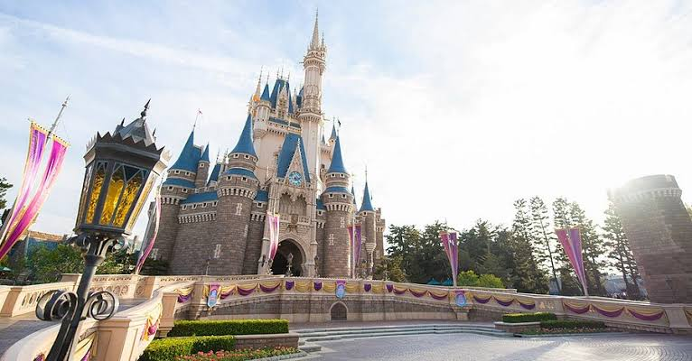
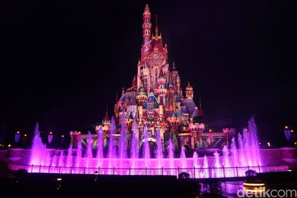
Sejarah Disneyland
Sejarah Disneyland berawal dari ide Walt Disney, seorang tokoh penting dalam perkembangan animasi dan industri hiburan. Walt Disney memiliki keinginan untuk menciptakan tempat di mana anak-anak dan orang dewasa dapat menikmati waktu bersama dalam lingkungan yang penuh imajinasi.
Pada masa itu, taman hiburan yang tersedia sering kali tidak dirancang untuk dinikmati seluruh anggota keluarga secara bersama-sama. Walt Disney kemudian memiliki gagasan untuk membuat taman yang bersih, aman, menarik, dan memiliki berbagai atraksi yang dapat dinikmati oleh orang dari berbagai usia.
Disneyland pertama dibangun di Anaheim, California. Taman tersebut resmi dibuka pada 17 Juli 1955. Pembukaannya menjadi sebuah peristiwa besar dan menarik perhatian masyarakat. Seiring berjalannya waktu, Disneyland terus berkembang dengan menambahkan berbagai wahana dan area baru.
Keberhasilan Disneyland kemudian membuat konsep taman hiburan Disney berkembang ke berbagai negara. Setiap lokasi memiliki ciri khas tersendiri, tetapi tetap mempertahankan unsur utama Disney, seperti karakter terkenal, cerita fantasi, dan suasana yang penuh imajinasi.
Disneyland California
Disneyland di Anaheim, California, merupakan taman Disney pertama di dunia. Lokasinya berada di dekat Los Angeles sehingga mudah menjadi bagian dari perjalanan wisata di California.
Disneyland Resort terdiri dari dua taman utama, yaitu Disneyland Park dan Disney California Adventure Park. Disneyland Park merupakan taman yang lebih tradisional dengan berbagai area bertema Disney. Sementara itu, Disney California Adventure memiliki berbagai atraksi yang terinspirasi dari California dan cerita-cerita Disney serta Pixar.
Salah satu ikon paling terkenal di Disneyland Park adalah Sleeping Beauty Castle. Kastel tersebut sering menjadi latar foto bagi pengunjung dan menjadi salah satu simbol Disneyland.
Di Disneyland, pengunjung dapat menjelajahi berbagai area dengan tema yang berbeda. Setiap area memiliki dekorasi, musik, bangunan, toko, dan wahana yang disesuaikan dengan tema tersebut. Hal ini membuat pengunjung merasa seperti masuk ke dalam dunia cerita yang berbeda.
Disneyland pertama dibuka pada 17 Juli 1955 di Anaheim, California, dan sekarang konsepnya sudah ada di enam resor Disney di seluruh dunia.
Wahana di Disneyland
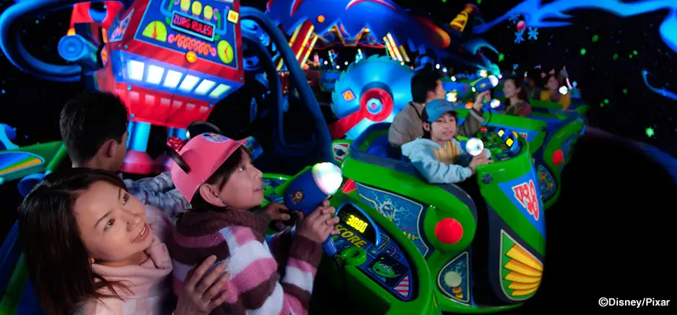
Salah satu alasan utama wisatawan mengunjungi Disneyland adalah berbagai wahana yang tersedia. Wahana di Disneyland tidak hanya mengandalkan kecepatan atau ketinggian, tetapi juga menggunakan cerita dan teknologi untuk menciptakan pengalaman yang menarik.
Beberapa wahana memiliki tema petualangan, sementara lainnya menggunakan karakter dan cerita dari film Disney. Ada juga wahana yang cocok untuk keluarga sehingga anak-anak dapat menikmatinya bersama orang tua.
Wahana seperti Pirates of the Caribbean membawa pengunjung ke dunia bajak laut dengan dekorasi dan efek khusus. Ada pula “it’s a small world”, sebuah atraksi yang membawa pengunjung dalam perjalanan melalui berbagai representasi budaya dunia.
Untuk pengunjung yang menyukai petualangan, tersedia berbagai wahana dengan suasana yang lebih menegangkan. Sementara itu, anak-anak dapat menikmati atraksi yang lebih santai dan sesuai dengan usia mereka. Keragaman wahana membuat pengunjung dapat memilih aktivitas sesuai dengan minat dan tingkat kenyamanan masing-masing.
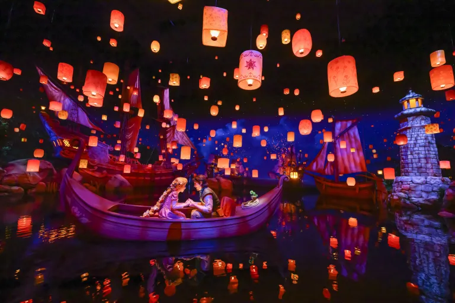
Karakter Disney
Salah satu hal yang membedakan Disneyland dari banyak tempat wisata lainnya adalah kesempatan untuk bertemu dengan karakter Disney. Pengunjung dapat melihat karakter terkenal seperti Mickey Mouse, Minnie Mouse, Donald Duck, Goofy, dan berbagai karakter lainnya.
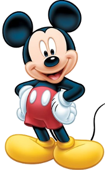

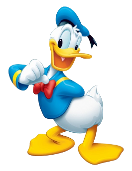
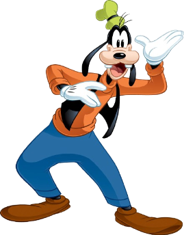
Karakter-karakter tersebut merupakan bagian penting dari pengalaman Disneyland. Pengunjung dapat berfoto bersama karakter atau melihat mereka dalam berbagai pertunjukan dan parade.
Bagi anak-anak, bertemu karakter yang sebelumnya hanya mereka lihat melalui film atau buku dapat menjadi pengalaman yang sangat berkesan. Bagi orang dewasa, hal tersebut juga dapat mengingatkan mereka pada cerita dan karakter yang sudah dikenal sejak kecil.
Kehadiran karakter Disney juga menunjukkan bagaimana sebuah tokoh fiksi dapat berkembang menjadi bagian dari budaya populer dan industri pariwisata.
Parade dan Pertunjukan
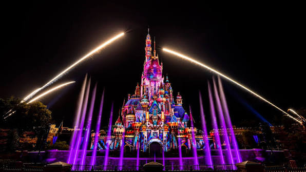
Selain wahana, Disneyland terkenal dengan parade dan pertunjukannya. Parade biasanya menampilkan kendaraan atau kereta bertema Disney yang dihiasi dekorasi menarik. Para karakter Disney juga ikut hadir dalam parade bersama para penari dan penghibur.
Pertunjukan tersebut dirancang dengan memperhatikan musik, kostum, pencahayaan, koreografi, dan dekorasi. Semua unsur tersebut digabungkan untuk menciptakan sebuah pengalaman yang menarik bagi penonton.
Pada waktu tertentu, Disneyland juga menyelenggarakan pertunjukan malam yang menggunakan cahaya, musik, proyeksi, dan efek khusus. Pertunjukan seperti ini menunjukkan bagaimana teknologi dapat digunakan untuk meningkatkan pengalaman wisata.
Bagi wisatawan, menyaksikan parade dan pertunjukan dapat menjadi salah satu kegiatan yang tidak boleh dilewatkan karena memberikan suasana yang berbeda dari sekadar menaiki wahana.
Teknologi di Disneyland
Teknologi merupakan salah satu bagian penting dalam pengembangan Disneyland. Sebagai taman hiburan modern, Disneyland menggunakan berbagai teknologi untuk membuat wahana dan pertunjukannya lebih menarik.
Salah satu contohnya adalah penggunaan animatronik, yaitu teknologi yang memungkinkan karakter atau objek bergerak secara otomatis sehingga terlihat lebih hidup. Teknologi ini banyak digunakan dalam berbagai atraksi bertema Disney.
Selain itu, teknologi pencahayaan, suara, proyeksi, dan efek khusus juga digunakan untuk menciptakan suasana tertentu. Misalnya, sebuah wahana dapat membawa pengunjung ke dalam suasana hutan, laut, luar angkasa, atau dunia fantasi dengan bantuan kombinasi teknologi tersebut.
Teknologi juga digunakan dalam pengelolaan taman. Sistem digital dapat membantu pengunjung memperoleh informasi mengenai wahana, jadwal pertunjukan, lokasi restoran, dan berbagai layanan lainnya. Hal ini menunjukkan bahwa teknologi informasi dan komunikasi atau TIK memiliki peran penting dalam industri pariwisata modern.
Disneyland dan TIK
Dalam bidang TIK, Disneyland dapat menjadi contoh bagaimana teknologi digunakan dalam sebuah tempat wisata. Pengunjung dapat menggunakan aplikasi resmi untuk melihat peta taman, mencari lokasi tertentu, melihat jadwal pertunjukan, dan memperoleh informasi mengenai berbagai atraksi.
Teknologi digital juga membantu pengelola mengatur jumlah pengunjung dan memberikan informasi secara lebih cepat. Penggunaan sistem digital dapat membuat pengalaman wisata menjadi lebih praktis karena pengunjung tidak perlu selalu mencari informasi secara manual.
Selain itu, teknologi digunakan dalam proses pembuatan wahana. Sensor, komputer, sistem suara, animasi, pencahayaan, dan berbagai perangkat elektronik dapat bekerja bersama untuk menciptakan pengalaman yang interaktif.
Perkembangan teknologi juga memungkinkan taman hiburan menghadirkan pengalaman yang semakin realistis. Wahana modern dapat menggunakan layar digital, proyeksi, efek suara, serta sistem gerak untuk membuat pengunjung merasa seperti berada di dalam sebuah cerita. Dengan demikian, Disneyland dapat menjadi contoh nyata hubungan antara teknologi, kreativitas, dan industri pariwisata.
Makanan di Disneyland
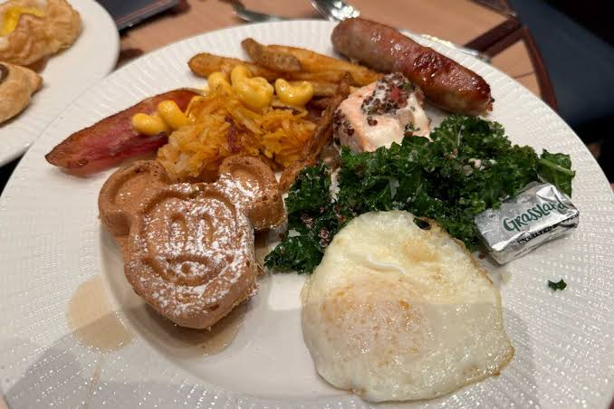
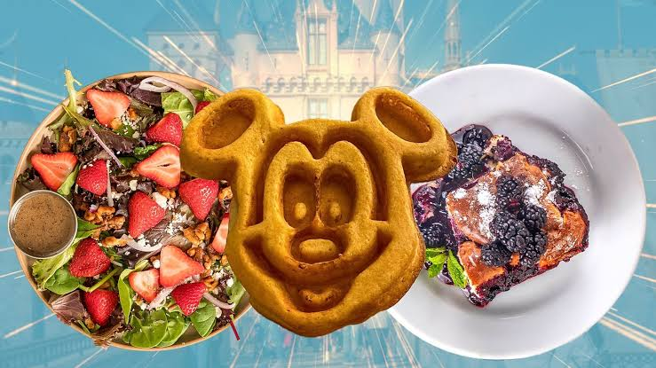
Selain wahana dan pertunjukan, makanan juga menjadi bagian dari pengalaman mengunjungi Disneyland. Di dalam taman terdapat berbagai restoran, kafe, dan tempat makan yang menawarkan beragam jenis makanan dan minuman.
Banyak makanan di Disneyland memiliki bentuk atau desain yang terinspirasi dari karakter Disney. Hal tersebut membuat makanan tidak hanya menjadi kebutuhan, tetapi juga bagian dari pengalaman wisata.
Pengunjung dapat menemukan berbagai jenis makanan ringan, makanan utama, makanan penutup, serta minuman. Pilihan makanan juga dapat berbeda tergantung lokasi Disneyland yang dikunjungi karena setiap negara memiliki kebiasaan dan budaya kuliner yang berbeda. Bagi wisatawan, mencoba makanan khas di Disneyland dapat menjadi salah satu kegiatan yang menyenangkan selama berkunjung.
Belanja Suvenir
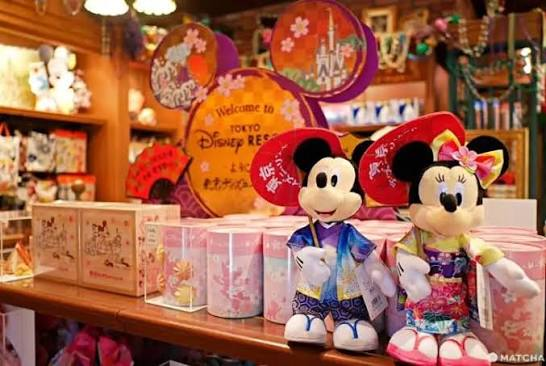
Disneyland juga memiliki banyak toko yang menjual berbagai suvenir. Pengunjung dapat menemukan pakaian, boneka, aksesori, alat tulis, dekorasi, dan berbagai barang lainnya dengan karakter Disney.
Suvenir sering dibeli sebagai kenang-kenangan setelah melakukan perjalanan. Beberapa barang juga hanya tersedia di lokasi tertentu sehingga dapat menjadi sesuatu yang menarik bagi kolektor.
Toko-toko di Disneyland biasanya dirancang sesuai dengan suasana taman sehingga pengalaman berbelanja tetap terasa seperti bagian dari dunia Disney. Namun, pengunjung sebaiknya membuat anggaran sebelum membeli suvenir. Karena banyak barang yang menarik, seseorang dapat dengan mudah membeli lebih banyak daripada yang direncanakan.
Disneyland di Berbagai Negara
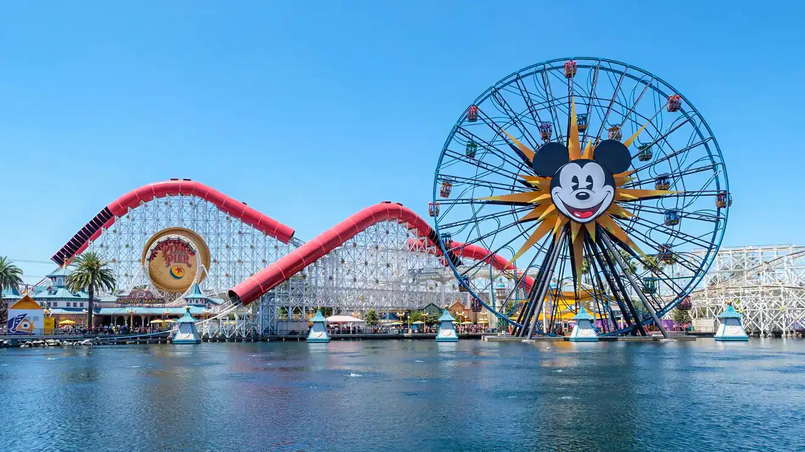
CaliforniaAmerika Serikat, 1955 FloridaAmerika Serikat, 1971
TokyoJepang, 1983
ParisPrancis, 1992
FloridaAmerika Serikat, 1971
TokyoJepang, 1983
ParisPrancis, 1992
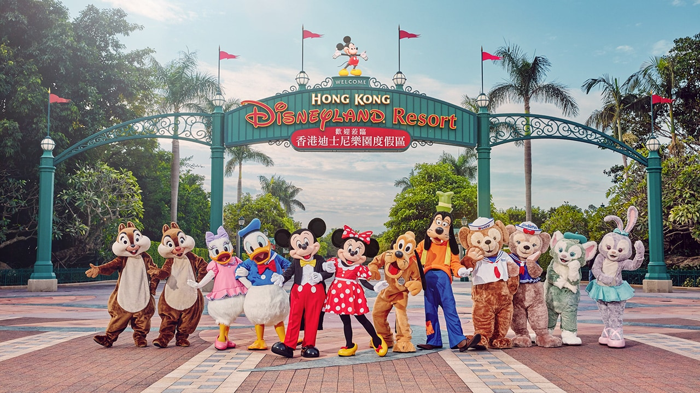
Hong KongHong Kong, 2005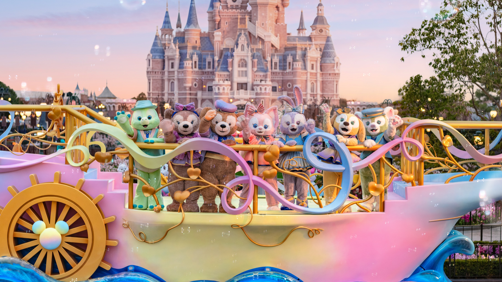
ShanghaiTiongkok, 2016Konsep Disneyland telah berkembang ke berbagai wilayah di dunia. Setiap destinasi memiliki karakteristik dan budaya lokal yang berbeda.
Tokyo Disney Resort berada di Jepang dan menjadi salah satu destinasi Disney yang terkenal di Asia. Disneyland Paris berada di Prancis dan menawarkan pengalaman Disney dengan nuansa Eropa. Hong Kong Disneyland berada di Hong Kong, sedangkan Shanghai Disney Resort berada di Tiongkok.
Walaupun memiliki perbedaan, setiap taman tetap mempertahankan identitas Disney. Karakter seperti Mickey Mouse tetap menjadi bagian penting, sementara desain, makanan, acara, dan beberapa atraksi dapat disesuaikan dengan budaya setempat. Hal tersebut menunjukkan bagaimana sebuah konsep hiburan internasional dapat beradaptasi dengan budaya yang berbeda.
Persiapan Sebelum Berkunjung
Sebelum mengunjungi Disneyland, wisatawan perlu melakukan beberapa persiapan. Hal pertama yang perlu diperhatikan adalah memilih lokasi Disneyland yang ingin dikunjungi karena setiap destinasi memiliki aturan, atraksi, dan suasana yang berbeda.
Wisatawan juga perlu mempersiapkan dokumen perjalanan jika Disneyland berada di luar negara tempat tinggal. Selain itu, tiket masuk sebaiknya direncanakan terlebih dahulu.
Karena Disneyland memiliki area yang luas, pengunjung juga sebaiknya membuat daftar wahana dan pertunjukan yang ingin dikunjungi. Dengan begitu, waktu dapat digunakan dengan lebih efektif.
Cuaca juga perlu diperhatikan. Jika berkunjung pada musim panas, pengunjung perlu mempersiapkan pakaian yang nyaman dan memastikan kebutuhan minum tercukupi. Jika berkunjung pada musim dingin, pakaian yang sesuai diperlukan agar tetap nyaman selama berada di luar ruangan.
Manfaat Mengunjungi Disneyland
Mengunjungi Disneyland tidak hanya memberikan hiburan, tetapi juga dapat memberikan berbagai pengalaman. Wisatawan dapat belajar mengenai budaya negara tempat Disneyland berada, melihat bagaimana teknologi digunakan dalam industri hiburan, dan mengamati bagaimana sebuah perusahaan menciptakan pengalaman bagi pengunjung.
Bagi pelajar, perjalanan ke Disneyland juga dapat menjadi kesempatan untuk mempelajari penerapan TIK dalam kehidupan nyata. Mulai dari aplikasi, sistem informasi, animatronik, hingga teknologi audio dan visual, banyak teknologi dapat ditemukan dalam satu tempat.
Selain itu, perjalanan bersama keluarga atau teman dapat membantu menciptakan kenangan dan pengalaman bersama. Mengunjungi tempat baru juga dapat membuat seseorang menjadi lebih terbuka terhadap lingkungan dan budaya yang berbeda.
Beverly’s Disneyland Experience
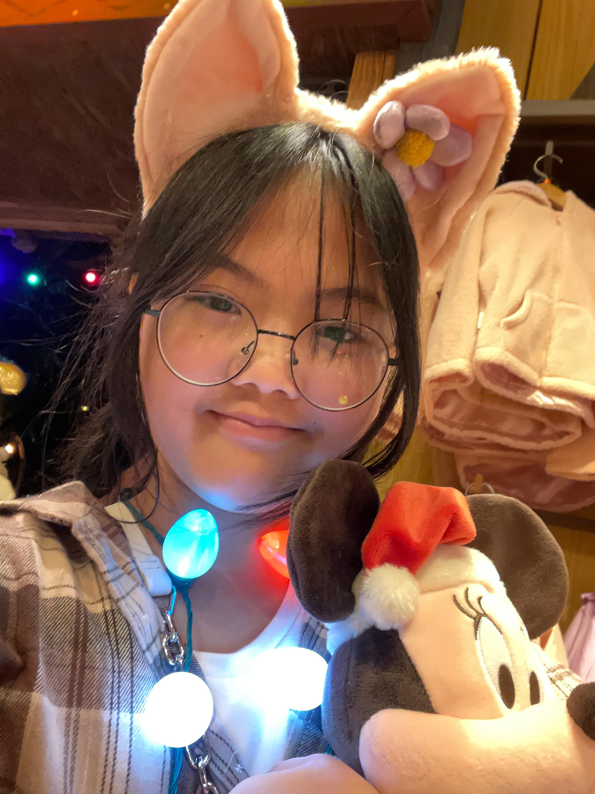
Hong Kong Disneyland, menjelang Tahun Baru | 2024
Salah satu pengalaman wisata yang paling berkesan bagi saya adalah ketika mengunjungi Hong Kong Disneyland saat Tahun Baru 2023-2024! Untuk menuju Disneyland, saya naik MTR Disney, dan dari perjalanan saja sudah terasa seru karena keretanya memiliki berbagai desain bertema Disney. Saat sampai, saya langsung kagum melihat Disney Castle yang ternyata sangat besar dan jauh lebih indah ketika dilihat secara langsung. Karena saya datang saat menjelang Tahun Baru, dekorasi Natal juga masih ada di berbagai tempat. Lampu-lampu dan hiasan Natal membuat suasana Disneyland terasa semakin meriah dan magical.
Selama di sana, saya mengunjungi berbagai area dan mencoba beberapa wahana seperti Dumbo the Flying Elephant, Frozen Ever After, dan Hyperspace Mountain. Dumbo the Flying Elephant terasa menyenangkan dan cocok untuk menikmati pemandangan Disneyland dari atas. Frozen Ever After juga sangat seru karena dekorasi dan suasananya membuat saya seperti masuk langsung ke dunia Frozen. Sementara itu, Hyperspace Mountain lebih menegangkan karena wahananya cepat, gelap, dan memiliki tema luar angkasa. Selain naik wahana, saya juga berkeliling, melihat berbagai dekorasi dan karakter Disney, serta mengambil banyak foto untuk mengabadikan momen.
Tentu saja, saya tidak pulang dengan tangan kosong! Saya membeli beberapa plushies Disney sebagai oleh-oleh dan kenang-kenangan. Menurut saya, hal yang paling membuat Hong Kong Disneyland spesial adalah setiap detailnya terasa dibuat dengan sangat baik, mulai dari wahana, musik, dekorasi, sampai suasana di setiap areanya. Perpaduan suasana Tahun Baru, dekorasi Natal, Disney Castle yang megah, dan berbagai wahana seru membuat pengalaman ini menjadi salah satu perjalanan yang paling menyenangkan dan berkesan bagi saya. Saya pasti ingin mengunjungi Disneyland lagi suatu hari nanti!
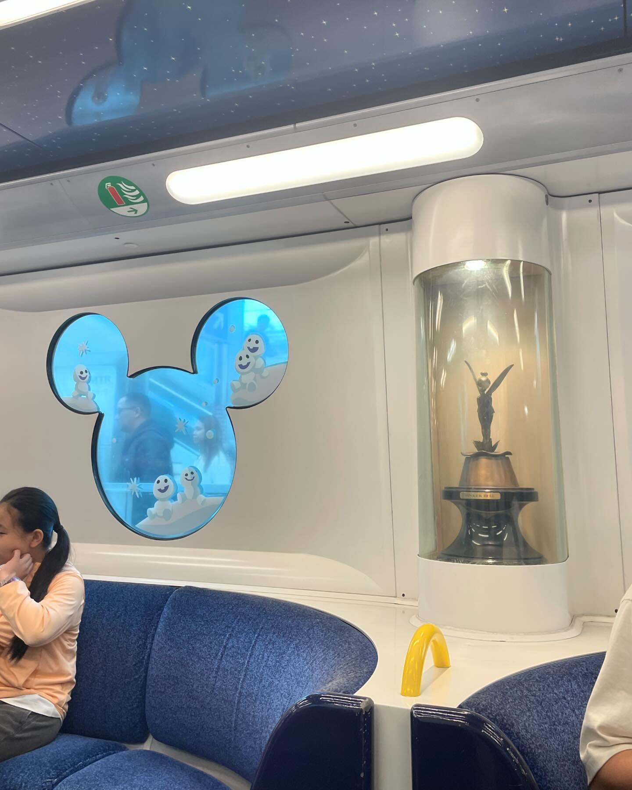
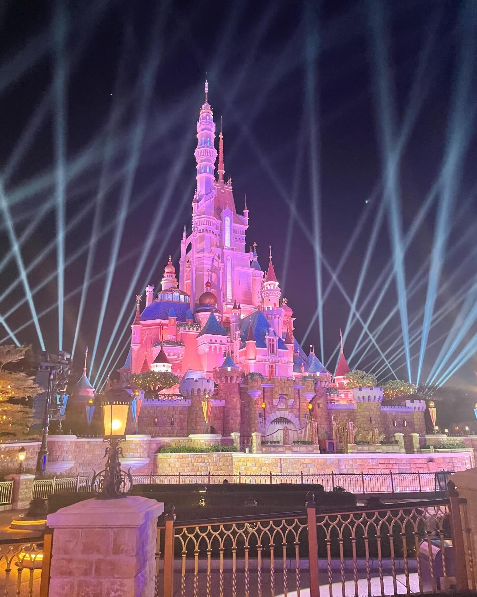
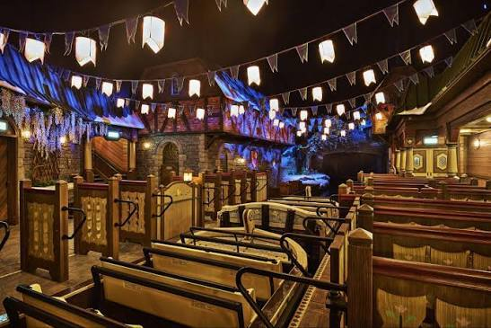
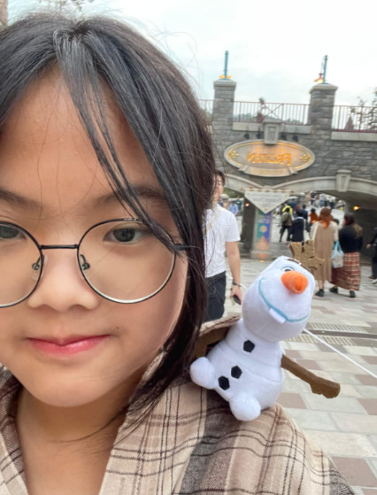
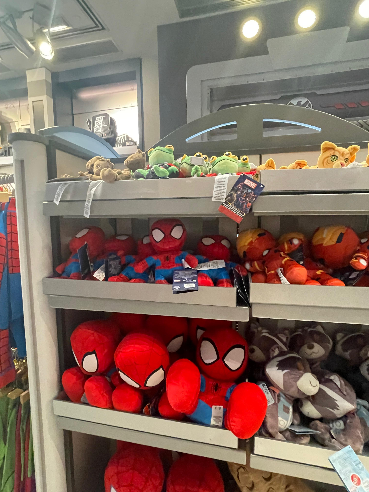
Kesimpulan
Disneyland merupakan salah satu destinasi wisata luar negeri yang terkenal dan memiliki daya tarik bagi berbagai kelompok usia. Tempat ini menawarkan berbagai wahana, pertunjukan, parade, karakter Disney, restoran, serta toko suvenir yang membuat pengunjung dapat menikmati pengalaman wisata secara lengkap.
Sejak Disneyland pertama dibuka di California pada tahun 1955, konsep taman hiburan Disney telah berkembang ke berbagai negara. Setiap lokasi memiliki ciri khas masing-masing, tetapi tetap mempertahankan unsur utama Disney berupa cerita, karakter, kreativitas, dan imajinasi.
Salah satu hal yang menarik dari Disneyland adalah penggunaan teknologi. TIK memiliki peran besar dalam menciptakan wahana, mengatur informasi, meningkatkan pelayanan, dan membuat pertunjukan menjadi lebih menarik. Penggunaan animatronik, sistem pencahayaan, suara, proyeksi, aplikasi digital, dan berbagai teknologi lainnya menunjukkan bagaimana teknologi dapat digabungkan dengan kreativitas untuk menciptakan pengalaman wisata.
Disneyland juga memperlihatkan bahwa pariwisata tidak hanya berkaitan dengan keindahan suatu tempat. Sebuah destinasi wisata dapat menjadi tempat untuk belajar, mengenal budaya, menikmati seni, dan melihat penerapan teknologi secara langsung.
Dengan berbagai pilihan aktivitas yang tersedia, Disneyland menjadi salah satu tempat wisata luar negeri yang menarik untuk dikunjungi. Bagi wisatawan, terutama pelajar dan keluarga, perjalanan ke Disneyland dapat memberikan pengalaman yang menyenangkan sekaligus menambah wawasan mengenai budaya, hiburan, teknologi, dan perkembangan industri pariwisata di dunia.